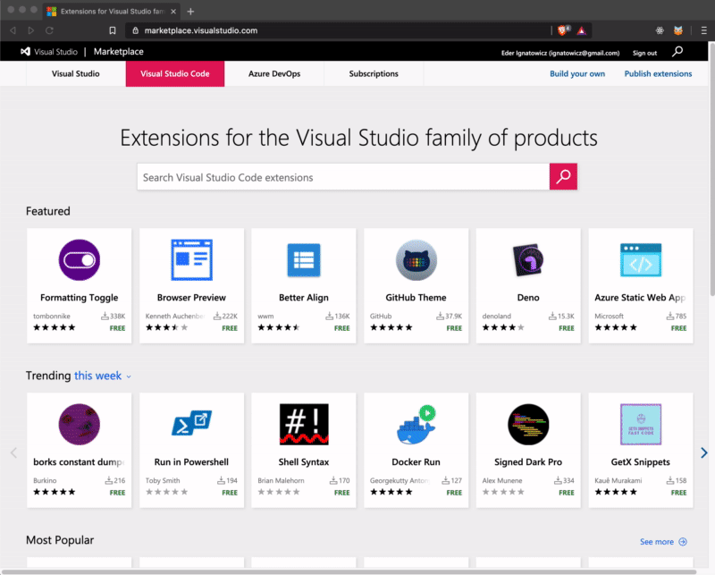
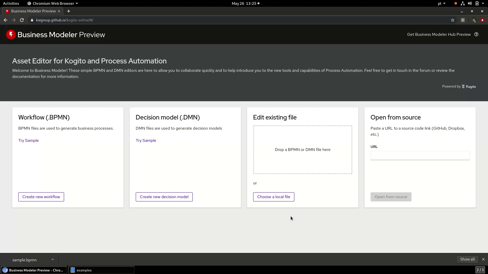
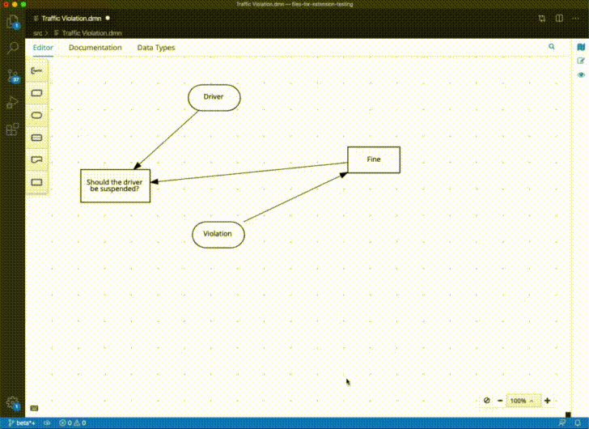

What is new on Kogito Tooling from Foundation Team perspective — April/May/Jun 2020
Recently, we had a lot of cool new features on Kogito Tooling added by Foundation Team. Those features are distributed on Kogito Tooling latest releases!
This post will do a quick overview of those. I hope you guys enjoy it!

Visual Code Store Extension Release
Last month, the VS Code team released its custom editor as an official API, and we were finally able to publish our editors on the VS Code Store.

We have now four published artifacts on the store:
At Red Hat Store:
- DMN Editor — containing DMN and SceSim;
- BPMN Editor;
- Red Hat Business Automation Bundle: an extension that groups all our extensions;
At KIE Store:
- Kogito Bundle: an extension that groups all our extensions for Kogito.
At this point, the bundles are just pointers to our extensions, this means that every time that you download our bundle, in fact, you are also downloading DMN and BPMN editors extensions. In the future, this bundle could potentially contain improved features, stay tuned! See the full post for details.
Business Modeler Desktop Preview
We released a new import piece of our tool belt, the Business Modeler Desktop. This modeler is a multi-platform standalone application that enables you to quickly create and edit DMN and BPMN assets on your Desktop. See the full blog post for details.

Business Modeler Hub Preview
We also released a new piece of our tooling strategy, the Business Modeler Hub Preview. A single place where you are just one click away from all our tooling channels. See the full blog post for details.

Business Modeler Preview Enhancements
We introduced some awesome UX tweaks on our Business Modeler and we expect it will improve even more your experience using it. See the full blog post for details.

Enhanced Keyboard Shortcuts On Kogito Tooling
We released a new Keyboard Shortcuts API. It gives editors the power to add custom reusable keyboard shortcuts that work in all channels! For the existing editors — BPMN, DMN and SceSim — we maintained the same mapping, but we did some under-the-hood enhancements that will make the experience even better. See the full blog post for details.

Exporting diagrams as GitHub gists
Users can now export their DMN and BPMN diagrams as GitHub gists on the Business Modeler. See the full blog post for details.

Other bug fixes and improvements:
We also fixed several bugs and did some performance improvements:
Chrome Extension
KOGITO-1676 — Chrome Extension loads editors twice
KOGITO-1491 — Sometimes editor is not loaded (Chrome extension)
KOGITO-1725 — Multiple Open in external editor links are created when the “back” button is clicked
KOGITO-1726 — Exit fullscreen on chrome extension has a different style than on the online modeler
KOGITO-2281 — Fix Chrome Extension Permissions
KOGITO-2409 — Change the name and add an icon to the chrome extension
KOGITO-2270 Update the Chrome Extension Tutorial
Business Modeler Preview
KOGITO-1556 — DMN online editor can not be used properly in full-screen mode
KOGITO-1782 — Maximize and Minimize causes two toolbars
KOGITO-2447 — Online editor is not reflecting the URL call
KOGITO-2354 — Home page of Business Modeler Preview Online is with wrong home layout
KOGITO-1392 CSS tweaks
Business Modeler Desktop Preview
KOGITO-1252 — Examples are not loaded correctly by desktop app
Business Modeler Hub Preview
KOGITO-1761 — Improve error message when installing VS Code extension in a previous version of VS Code
KOGITO-2203 Non visible kebab menu
KOGITO-1918 File doesn’t save properly after tried to open an invalid one
KOGITO-1788 Desktop sort recently opened files
KOGITO-1791 CSS tweaks
VSCode Improvements
KOGITO-2385 Adapt to new VSCode API 1.46.0
KOGITO-2139 [VSCode] “Open with…” on explorer does not work
KOGITO-1777 VSCode Store Extension Release
KOGITO-1802 Create new VSCode Extensions Distributions
KOGITO-1778 — Adapt to new VSCode API (1.44.0)
KOGITO-1479 — Upgrade Kogito VSCode extension to the final API
KOGITO-1389 — “Open to the side” not working with the newest VSCode extension (new API)
KOGITO-1491 — Sometimes editor is not loaded (Chrome extension)
KOGITO-1863 — Adapt to new VSCode API 1.45.0
KOGITO-1837 — Expose viewType and getPreviewCommandId on vscode-extension index.ts
KOGITO-1970 — Implement Undo/Redo
KOGITO-1971 — Implement SaveAs
KOGITO-1972 — Implement Revert
KOGITO-1973 — Implement async Save
KOGITO-1974 — Implement Backup
KOGITO-1801 — Dirty state of editor on consequently save operation
KOGITO-1835 — State Control API stop working on VSCode 1.44.x
KOGITO-1034 VSCode standard keyboard shortcuts don’t work while extension is enabled
KOGITO-1748 VSCode editor — Package property is empty when the process is created
KOGITO-2128 Cannot open a diagram on a new VsCode window
KOGITO-2343 Shortcuts are always active for nodes (conflict)
Business Modeler Preview
KOGITO-1461 — BPMN2 Logo doesn’t show correctly
KOGITO-1320 — Prevent editors from opening with an unsupported file
KOGITO-1668 — Fix drag and drop CSS and upload button validation
KOGITO-859 — Open file URL using Chrome Extension when it has CORS disabled
Infrastructure
KOGITO-1436 — Remove double setContent call
KOGITO-927 Kogito tooling CI should also build on windows
KOGITO-1349 Dev Tools — Update Patternfly to current version Editor Improvements
KOGITO-1426 Re-enable Resource Content API
Thank you to everyone involved!
I want to thank everyone involved with this release from the awesome KIE Tooling Engineers to the lifesavers QEs and the UX people that help us look awesome!